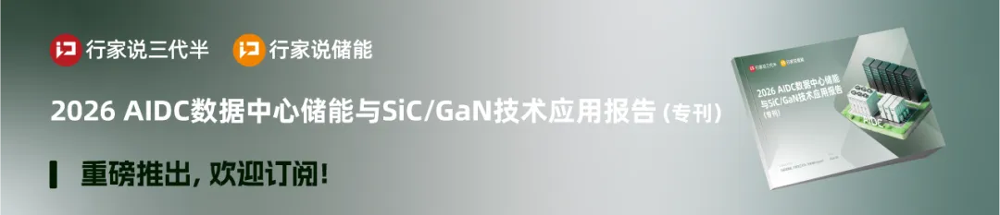
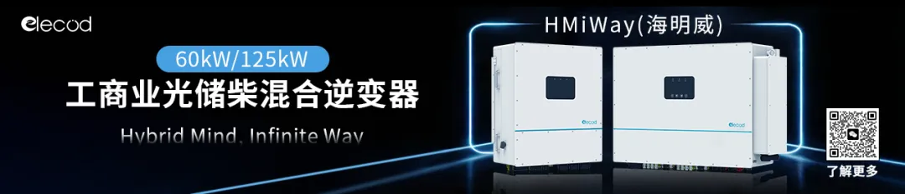
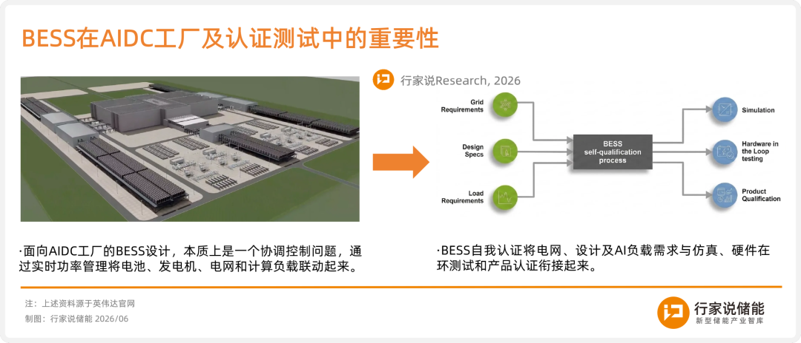
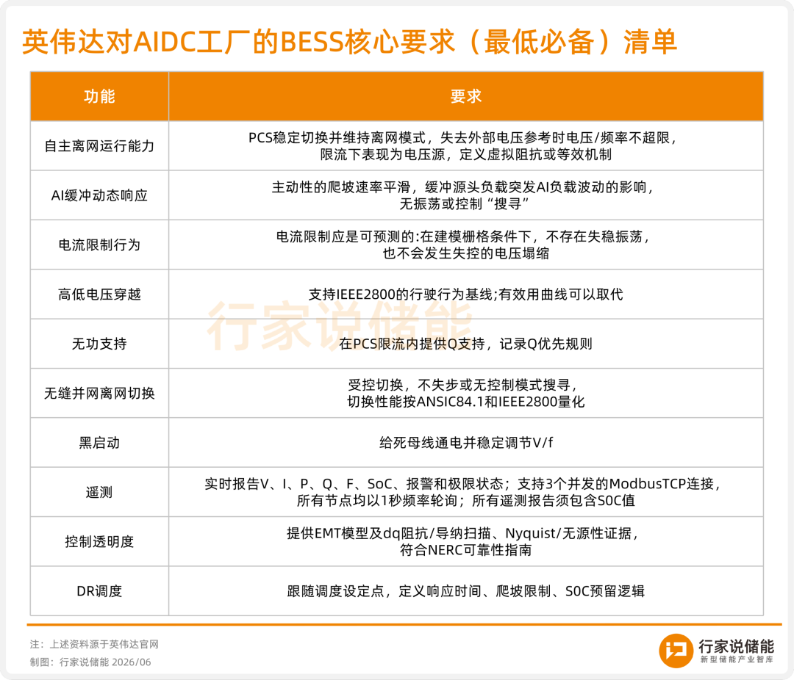
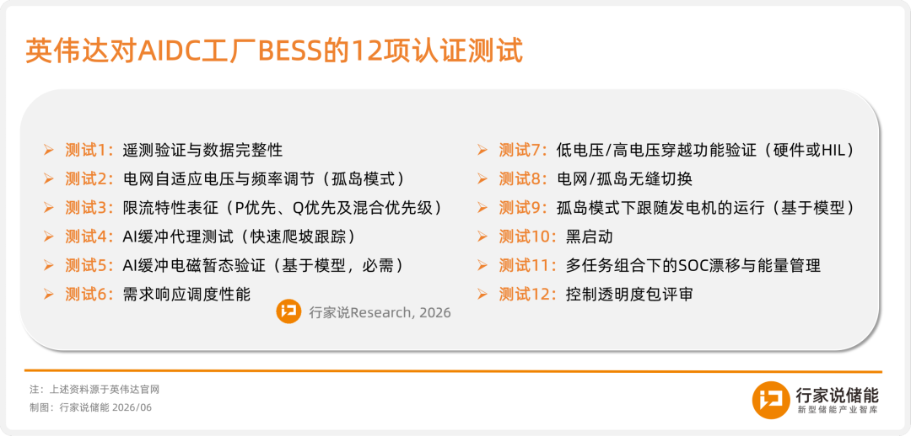
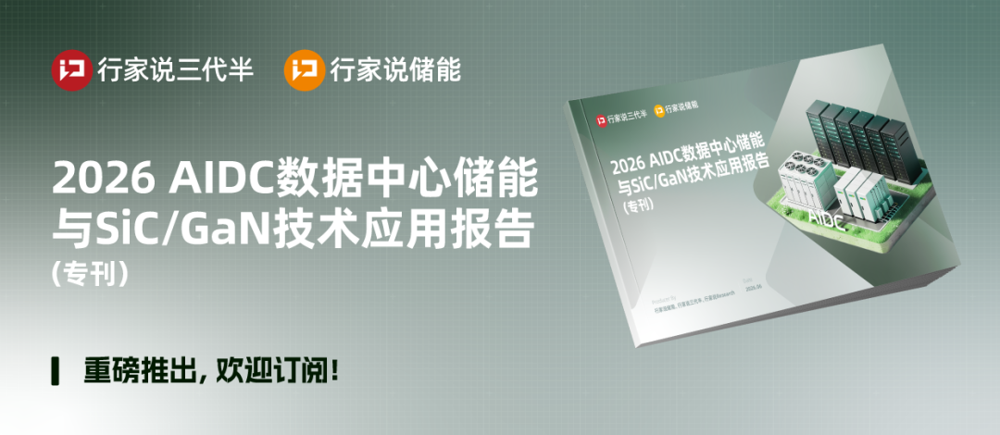

人工智能工厂究竟需要什么样的储能系统？储能厂商又该如何跻身英伟达的供应链？
近期，英伟达发布BESS（电池储能系统）自我认证指南，首次为面向AIDC工厂的BESS建立一套完整的技术认证框架，明确将AI负荷缓冲、需求响应和并离网无缝切换列为储能系统的必备能力。
这份指南既为储能厂商指明了进入英伟达供应链的准入路径，还为整个AIDC储能行业立下了首个以“算力适配”为核心的技术参照系。
BESS为何在AIDC中越来越重要？
在面向人工智能工厂的NVIDIA DSX™平台中，BESS是更广泛的人工智能工厂电源架构的一部分，而非独立的附加组件。与传统数据中心的工作负载变化缓慢且多样化不同，AIDC负载波动剧烈，其大规模地管理快速爬坡和集中负荷需要合适的控制和缓冲系统，储能系统正是为此而设计。
为什么BESS变得如此重要？英伟达在相关技术博客中描绘了BESS的四层价值：
一是AI负荷平滑：英伟达正通过GPU级和机架级技术从源头上控制电力波动。BESS作为设施级的缓冲或备用电源，在残余瞬态波动到达上游系统时吸收或注入功率，帮助保护发电机和电网接口，提升站点整体稳定性。
二是支持扰动穿越：即在电网波动时保持运行并协助恢复，而非加剧问题。BESS能让AIDC负载在备用电源下保持稳定，同时满足电网侧的跨电网运行要求，兼顾备用连续性与电网合规。
三是支持运行灵活性：AIDC工厂可能在并网、协调现场发电或孤岛等多种配置下运行。BESS桥接这些模式，支持黑启动，并在站点无法完全依赖电网时贡献电压和频率调节。
四是加快并网进度：没有BESS的AIDC工厂可能面临更长的电力接入延迟，因为它们更难平滑地整合到电力系统中。BESS帮助更从容地应对AIDC电力需求，将受限的并网时间线转化为可解的工程问题。
那么，接下来的问题就是：这个BESS究竟要怎么做？

**
AIDC中BESS设计，难在哪？
需要明确的是，传统的储能系统逻辑并不能直接套用到AIDC工厂。AIDC工厂的储能需求，远比单一场景的配置逻辑复杂得多——它要应对的不是固定的负荷曲线，而是GPU瞬时功率飙升、工作负载频繁切换、电网与离网模式交替运行等高度动态的场景。
英伟达指出，AIDC工厂的BESS复杂度远超容量核定——它是与电网深度交互的控制系统，需要软硬件全栈协同设计，而非“先定容量再配控制”。更大的差异在于建模对象：传统电站盯住电池和线路即可，但AIDC工厂必须将计算负载本身纳入模型，涵盖IT负载行为、功率爬坡、UPS模式、保护逻辑等关键变量。
基于此，英伟达提出AIDC工厂BESS必须追求三个核心性能目标：
一是稳定电源：BESS负责缓冲上游残余负荷波动，保护发电机，维持电网稳定；
二是自适应性运行：支持并网、离网、与发电机协同三种模式，并能平滑切换、稳定控制；
三是限流行为可预测：明确定义限流阈值及限流下的功率响应规则，确保故障后稳定恢复。
三个目标背后，英伟达的核心逻辑很明确：硬件堆料解决不了控制问题。快速遥测、实时分析和联动控制架构才是设计的关键，电压、电流、频率、SOC等核心信号须毫秒级实时可用且时间同步，并且必须足够精确地同步，以满足运行和事后诊断的需求。
最后，还有一点容易被忽略：能量余量怎么管。AIDC工厂可能会让BESS同时干好几件事——瞬态稳定支撑、故障穿越备用、需求响应、发电机协调，这些任务常常互相“抢电量”，所以设计必须定好优先级。总之，不能什么都想干，最后什么都没守住。
**
如何进入英伟达的供应链？**
**如果说前文讨论的是"BESS设计应该追求什么目标"，那英伟达这份BESS自我认证指南回答的则是"如何证明你达到了这些目标"。
在英伟达看来，BESS被视为AIDC工厂中与电网交互的控制系统，英伟达的BESS认证要求BESS边界定义在交流侧储能系统（包含PCS），OEM责任或现有监管框架范畴如电池容量、直流侧拓扑、电池化学成分、网络安全、消防安全等要求并不在此列。为此，英伟达在指南中明确列出了10项核心要求，代表通过认证所需的最低能力门槛（见下表）。

**为了满足以上核心要求，认证指南定义了BESS必须要进行的12项测试（详见下表），涵盖硬件测试和基于模型的仿真分析。同时，测试仪器需满足严格的精度要求，如电压和电流±0.2%、功率±0.5%、频率±0.01Hz、通道间时间同步±1ms等。

这12项测试中，对PCS的性能考核尤为突出。测试1要求验证PCS遥测精度、时间戳和数据的完整性——这是所有动态响应的前提；测试3要求展示在所有优先级配置下，PCS在达到或超过电流限值时依然保持稳定、可预测且透明的行为；测试5则进一步加码，在SCR=2的极端弱电网条件下，验证PCS在极端弱电网条件下的稳定性和控制鲁棒性（即抗扰动能力），这些条件代表AIDC园区故障、部分孤岛或开关频繁的典型场景。
与此同时，测试11提出了一个容易被忽视却极具挑战性的要求：进行至少24小时的连续仿真或加速曲线测试，SOC净漂移不得超过±5%可用容量，目的是验证BESS在多任务组合下的SOC漂移与能量管理能力。英伟达对此有特别提及——仅靠增加电池容量不能满足此要求，SOC稳定性必须通过控制逻辑和能量管理实现，而非铭牌容量。这相当于明确否定了"堆电池就能过关"的粗暴思路。
此外，该认证指南不仅考察性能，还涵盖业务准备情况、供应链信誉、质量体系和可靠性证据。如需披露过去12个月的实际PCS交付量、最大单次部署规模及工厂信息，并提交24个月内实现10倍产能扩张的可信爬坡计划等。简单来说就是：技术再牛，造不出来、交不了货，也会不合格。
另值得注意的是，认证指南反复强调一个原则：声称的能力必须有数据验证和模型支撑，不接受营销声明。
**
谁能拿到英伟达储能供应链的“入场券”？**
英伟达BESS认证指南的价值，在于为AIDC储能系统的技术透明度、可复现性和可比性建立了统一的基准。谁能率先将BESS集成至AIDC电气设计，明确定义性能目标，以真实数据完成验证闭环，并伴随AIDC工厂规模扩张、运行模式调整或AI负载升级，进而持续迭代，谁就能在这场竞赛中抢得先手。
实际上，头部玩家已率先行动起来了。如Fluence在与西门子、英伟达、nVent的合作中，强调其Smartstack储能平台可提供电压频率穿越、黑启动、需求响应和AI负载平滑等能力；LG新能源则计划根据英伟达BESS自认证指南，联合开发800伏直流数据中心能源解决方案，瞄准下一代GPU供电需求；近期，英伟达团队更到访阳光电源，就整体AIDC电力系统进行深入讨论。
对于储能厂商而言，要么按新规则证明自己，要么留在赛道之外。**

*往期精选：***


让更多人看到有价值的信息!